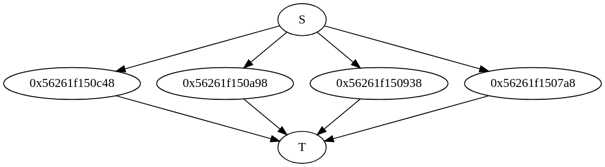

Parallel tasks normally produce some quantity that needs to be combined or reduced through particular operations, for instance, sum. In this chapter, we are going to demonstrate how to use Cpp-Taskflow to parallelize a reduction workload.
Reduce a Range of Items to a Single Result
tf::Taskflow::reduce(I beg, I end, T& result, B&& bop) is the most common reduction method to create a task dependency graph that reduces a range of items to a single result through a binary operator.
2:
3: std::vector<int> items {1, 2, 3, 4, 5, 6, 7, 8};
4: int sum {0};
5:
6:
auto [S, T] = taskflow.
reduce(items.begin(), items.end(), sum, [] (
int a,
int b) {
7: return a + b;
8: });
9:
12:
14:
15: std::cout << "sum = " << sum << std::endl;
Debrief:
- Line 1 creates a taskflow object
- Line 3 creates a vector of integers
- Line 4 declares an integer variable
sum and initializes it to zero
- Line 6-8 constructs a reduction graph that sums up all integer itmes and stores the final result in
sum
- Line 10-11 names the two synchronization points
- Line 13 dispatches the graph for execution
- Line 15 prints out the final reduction value
The task dependency graph of this example is shown below:

Taskflow partitions and distributes the workload evenly across all workers for all reduction methods. In this example, each internal node sums up two integers and the target node T combine all results returned by the internal nodes to a single value.
Transform and Reduce
It is common to transform each item into a new data type and then perform reduction on the transformed sequences. Taskflow provides a method, tf::Taskflow::transform_reduce(I beg, I end, T& result, B&& bop, U&& uop), that fuses these two operators together to save memory reads and writes. The example below takes a string and transforms each digit to an integer number, and then applies reduction to sum up all integer numbers.
1: std::string str = "12345678";
2: int sum {0};
3:
5: [] (int a, int b) {
6: return a + b;
7: },
8: [] (char c) -> int {
9: return c - '0';
10: }
11: );
12:
13:
Debrief:
- Line 1 creates a string of eight digits
- Line 2 declares an integer variables and initializes it to zero
- Line 4-11 constructs a reduction graph that converts each character of the string into an integer and computes the sum of all integers
Taskflow has another overload tf::Taskflow::transform_reduce(I beg, I end, T& result, B&& bop1, P&& bop2, U&& uop) that takes an additional binary operator bop2 to combine the result of uop and the dereferencing of an input iterator to a data type that is acceptable as input to bop1. This is useful when extra computation is required during the reduction process.
1: std::string str = "12345678";
2:
3: double sum {0};
4:
6: [] (double a, double b) {
7: return a + b;
8: },
9: [] (double a, char c) -> double {
10: return a + (c - '0');
11: },
12: [] (char c) -> double {
13: return static_cast<double>(c - '0');
14: }
15: );
16:
17:
Debrief:
- Line 1 creates a string of eight digits
- Line 3 declares an integer variable and initializes it to zero
- Line 5 constructs a reduction graph that represents the reduction workload
- Line 6-8 takes a binary operator to combine two transformed data
- Line 9-11 takes a binary operator to combine one raw data together with a transformed data
- Line 12-14 takes a unary operator to transform one raw data to the reduced data type
The difference between the two overloads appears in the second binary operator. Instead of converting every item to the reduced data type, this binary operator provides a more fine-grained control over reduction.
Example 1: Find the Min/Max Element
One common workload of using reduce is to find the minimum or the maximum element in a range of items. This example demonstrates how to use the method tf::Taskflow::reduce to find the minimum element in a data set.
1: #include <taskflow/taskflow.hpp>
2:
3: int main() {
4:
6:
7: std::vector<int> items {4, 2, 1, 3, 7, 8, 6, 5};
8: int min = std::numeric_limits<int>::max();
9:
10: taskflow.
reduce(items.begin(), items.end(), min, [] (
int a,
int b) {
11: return std::min(a, b);
12: });
13:
15:
16: std::cout << min << std::endl;
17:
18: return 0;
19: }
Similarly, the example below finds the maximum element in a data set.
1: #include <taskflow/taskflow.hpp>
2:
3: int main() {
4:
6:
7: std::vector<int> items {4, 2, 1, 3, 7, 8, 6, 5};
8: int max = std::numeric_limits<int>::min();
9:
10: taskflow.
reduce(items.begin(), items.end(), max, [] (
int a,
int b) {
11: return std::max(a, b);
12: });
13:
15:
16: std::cout << max << std::endl;
17:
18: return 0;
19: }
Example 2: Pipeline a Reduction Graph
The tf::Taskflow::reduce method returns a task pair as two synchronization points of the reduction graph which can be used to pipeline with other tasks. The example below demonstrates how to pipeline a reduction graph with other tasks.
1: #include <taskflow/taskflow.hpp>
2:
3: int main() {
4:
6:
7: std::vector<int> items{1024};
8: int min = std::numeric_limits<int>::max();
9:
11: for(auto& item : items) {
12: item = ::rand();
13: }
14: });
15:
16:
auto [S, T] = taskflow.
reduce(items.begin(), items.end(), min, [] (
int a,
int b) {
17: return std::min(a, b);
18: });
19:
21: std::cout << "min is " << min << std::endl;
22: });
23:
26:
28:
29: return 0;
30: }
Debrief:
- Line 5 creates a taskflow object with four worker threads
- Line 7 creates a vector of 1024 uninitialized integers
- Line 8 creates an integer value and initializes it to the maximum representable value of
int
- Line 10-14 creates a modifier task that initializes the vector to random integer values
- Line 16-18 creates a reduction graph to find the minimum element in the vector
- Line 20-22 creates a task that prints the minimum value found after the reduction finishes
- Line 24-25 adds two dependency links to implement our control flow
- Line 27 dispatches the task dependency graph to threads and waits until the execution completes
In the reduction graph, each worker thread applies the give reduce operator to a partition of 1024/4 = 512 items. The final minimum value is stored in the variable min. Since the variable min participates in the reduction process, it is users' responsibility to initialize it to a proper value.
Example 3: Find the Minimum L1-norm
The example below applies the method tf::Taskflow::transform_reduce to find the minimum L1-norm out of a point set.
1: #include <taskflow/taskflow.hpp>
2:
3: struct Point {
4: int x1 {::rand() % 10 - 5};
5: int x2 {::rand() % 10 - 5};
6: };
7:
8: int main() {
9:
11:
12: std::vector<Point> points {1024};
13: int min = std::numeric_limits<int>::max();
14:
16: [] (int a, int b) {
17: return std::min(a, b);
18: },
19: [] (const Point& point) -> int {
20: return std::abs(point.x1) + std::abs(point.x2);
21: }
22: );
23:
25:
26: return 0;
27: }
Debrief:
- Line 3-6 declares a point struct at 2D plane
- Line 10 creates a taskflow object with four worker threads
- Line 12 creates a vector of 1024 randomly initialized points
- Line 13 creates an integer value and initializes it to the maximum representable value of
int
- Line 15-22 applies transform-reduce operation to find the point with the minimum L1 distance
- Line 24 dispatches the task dependency graph to threads and waits until the execution completes


 1.8.13
1.8.13